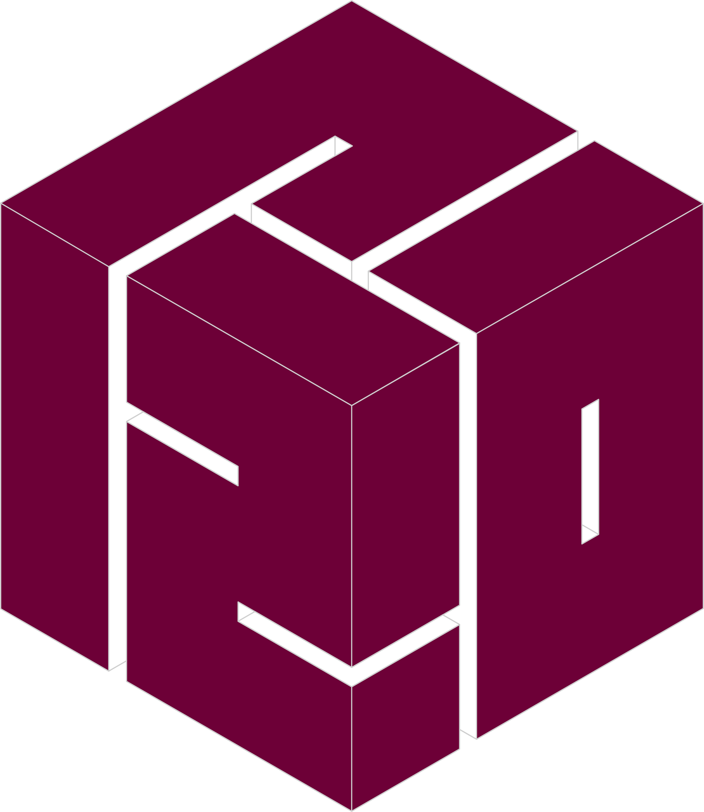

Se introduce el tema
Encuentro virtual sincrónico: se presenta el contenido de la semana y se propone la actividad.
- 18:00–19:30Consulta virtual Matemática
- 19:30–21:00Consulta virtual Física

Matemática y Física, de octubre a diciembre. Los martes el encuentro es virtual y sincrónico: se introduce el tema y se propone la actividad de la semana. Los viernes son presenciales, para consulta. La actividad se entrega en Moodle.
Un tema por semana: lo abre el encuentro virtual del martes y lo cierra la consulta presencial del viernes.
Encuentro virtual sincrónico: se presenta el contenido de la semana y se propone la actividad.
Espacio presencial para trabajar las dudas sobre el tema y sobre la actividad de la semana.
La actividad propuesta el martes se entrega en Moodle hasta el lunes siguiente.
Octubre, noviembre y diciembre de 2026. Pasá el cursor —o tocá— sobre un día marcado para ver sus actividades.
Dos parciales por materia, alternados y siempre en sábado, más un único recuperatorio conjunto en diciembre.
| Fecha | Instancia | Materia | Tipo |
|---|---|---|---|
| 31/10sábado | Parcial 1 | Matemática | Parcial |
| 07/11sábado | Parcial 1 | Física | Parcial |
| 21/11sábado | Parcial 2 | Matemática | Parcial |
| 28/11sábado | Parcial 2 | Física | Parcial |
| 12/12sábado | Recuperatorio | Matemática y Física | Recuperatorio |